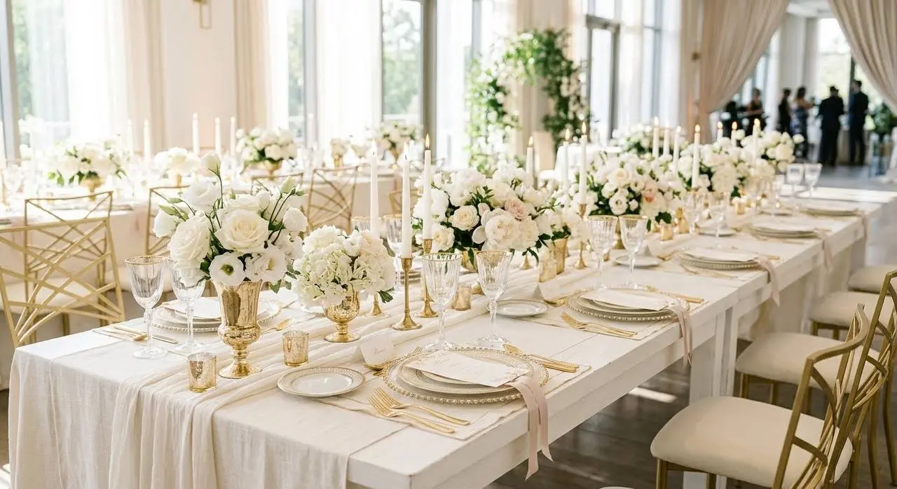
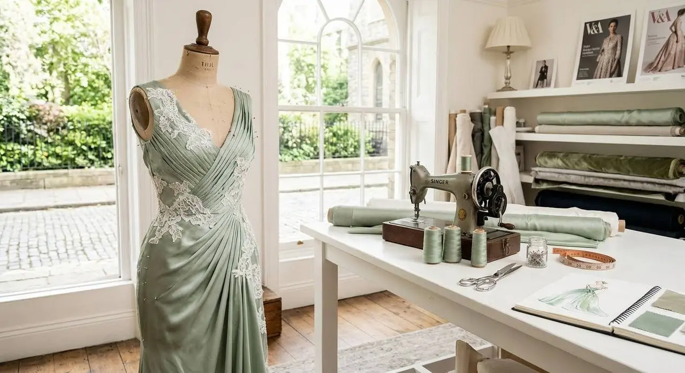

ذكاء اصطناعي وبرمجة
تطبيق المساعد الذكي لإدارة المهام
النتيجة: تطوير واجهة ذكية تساعد المستخدمين على تنظيم مهامهم اليومية وتحليل البيانات بسرعة ودقة عالية.
عرض تفاصيل المشروع ←نماذج مختارة من مشاريعي في التقنية، تنسيق الحفلات، وتصميم الأزياء
النتيجة: تطوير واجهة ذكية تساعد المستخدمين على تنظيم مهامهم اليومية وتحليل البيانات بسرعة ودقة عالية.
عرض تفاصيل المشروع ←
النتيجة: تصميم وتنفيذ ديكور متكامل بالورود البيضاء والإضاءة الدافئة نال إعجاب جميع الحضور.
عرض تفاصيل المشروع ←
النتيجة: تنفيذ تفصيل دقيق بقماش الساتان والدانتيل اليدوي مع تشطيب احترافي يجمع بين الأناقة والراحة.
عرض تفاصيل المشروع ←